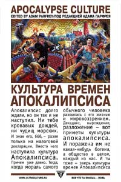

Адам Парфрей (сост.) • Культура времен Апокалипсиса • Перевод: Александр Ведюшкин и др. • non-fiction • 27.01.2005

Педофилы, фашиствующие иудеи, скатологические маги, маньяки-поэты… Вы думаете что маргинальная или даже криминальная культура — это далекая и периферия благоденствующего Запада? Вы думаете, что окончательный распад морали связано только с христианским пророчеством о пришествии Антихриста? Вы уверены? Оглянитесь вокруг, и вы поймете, что либо пропасть грехопадения не имеет дна, либо мораль — это не то, что принято за нее принимать, что Пришествие уже состоялось, да только его никто не заметил… Все еще не верите? Читайте «Культуру времен Апокалипсиса».
Пресса
Анатолий Ульянов. Рецензия на книгу Адама Парфрея «Культура времен Апокалипсиса»
Воинствующие педофилы, эстетические террористы, фекальные чародеи, шизофреники и роботы, массовые и ритуальные убийства, параноики и сексуальные рабы, гермафродиты и сатанисты, гитлеровские евреи и полет на Марс с Иисусом Христом – книга Адама Парфрея «Культура Апокалипсиса» – это документальное полотно о побочных эффектах современности, наиболее радикальная антология сбоев сознания, патологий и величайших табу нашего времени.
Сущность описываемого ужаса в его объективности и заслуженности. Он порожден нынешним большинством – адептами нового времени. «Культура Апокалипсиса» – это извращение, рожденное обществом спектакля, обществом благостных улыбок, красивых декораций и вселенского добра, нашим обществом.
Книга потрошит читателя, вырезает из него наиболее чувствительные нервы и бросает их на передний край современности – во мрак эпохи, где «сон разума породил ужасных чудовищ».
«Культуру Апокалипсиса» стоит прочитать, чтобы понять. Короткие истории, вырезки, интервью и статьи сливаются в единый монолит, и это рассказывает нам нечто новое и до боли правдивое о закоулках человека и человечества. Если бы подобные книги включали в школьную программу, в мире было бы меньше слабоумных социальных роботов, мир был бы красивее и чище.
Быть может, книга Адама Парфрея «Культура Апокалипсиса» – один из важнейших культурных артефактов последнего десятилетия. Полагаю, у склонного к эстетству интеллектуала есть все основания приобрести эту библию ужасов современности.
http://proza.com.ua/article/1465/
“Культура времён Апокалипсиса” (Дмитрий Попов, www.nork.ru, 18.02.2006)
Согласно неугомонному Адаму Парфрею, “если что-то и наступает, то вовсе не хвалёный конец. Апокалипсис лопнул” (стр. 5), т. е., будучи громко анонсированным и широко разрекламированным, Апокалипсис породил множество явлений, характерных исключительно для него, но сам явиться и не подумал. Одно из детищ блудного папаши – специфическая культура, которой и посвящён этот объёмный том.
Здесь, конечно, представлена не вся Культура Апокалипсиса – ведь в одной, пускай и такой пухлой книге нельзя разместить всё то, что родилось на свет благодаря слиянию творчества (куда, несомненно, стоит зачислять деятельность не только художественного плана) и ощущения (ясного или смутного, подло затаившегося в подсознании и оттуда действующего) приближающегося конца. В одной книге нельзя уместить даже то, что показало и описало бы всё когда либо выходившее на FERAL HOUSE Парфрея, настоящем издательстве Культуры Апокалипсиса. Но общее представление об этой самой культуре по рецензируемому сборнику получить можно.
По большому счёту в нём представлены две темы: заговор и порнография (причём по большей части детская). Все остальные являются их производными или смесью. Например: параноидальное мессианство – заговор, террористы – заговор, наркотики – тоже, в принципе, заговор (что есть дилерская сеть, как не объект внимания для конспирологов?), человекоподобные механизмы – заговор и порнография, гермафродиты – заговор и порнография и т. д. и т. п.
Разумеется, представленные материалы совершенно разные. Что-то вызывает лишь недоумённое пожатие плечами, а что-то… не оставляет равнодушным – скажем так. Много такого, что читаешь с более или менее вытаращенными глазами, а по завершении только и можешь пробормотать “да уж”. Или “no comment”. Но по одной из главных тем сборника сказать “no comment” лично нам не получается. Причисляя себя к эстетическим террористам, о которых говорит Парфрей (очерк “Эстетический терроризм”, стр. 11), мы не принимаем сексуального (брутально порнографического) и физического насилия над детьми. Но не из этических соображений, а именно из эстетических. Мы это не отрицаем, но нам это не нравится, для нас это некрасиво. Как говаривал Леон: “Кроме женщин и детей”, хотя насчёт первых он погорячился. Среди детей, конечно, тоже полно гадёнышей, но если с ними что-то и делать, то только классически душить в пелёнках – для их же блага. И для всеобщего.
С другой стороны, статья Криса Кэмпиона “Педофилия и нравственное благочестие” показывает, что только что изложенная позиция (“кроме детей”, а не “душить в пелёнках”) – результат идеологического и морального прессования человека на протяжении веков. Типа раньше, в Древней Греции, да и в Европе в славное Средневековье, сексуальные отношения взрослых мужчин с мальчиками были в порядке вещей (стр. 338). Это потом пошла гуманистическая пропаганда и т. д. А так – никакого извращения. Что вы! Но плотно нас, видать, запрессовали. Не можем мы понять страсть к мальчикам. В пелёнках душить – это да. Но не в попку и ротик трахать. У суфиев, кстати, почти такая же тема была – они всё “о, безбородый” стенали (т. е. мальчики у них постарше были). И ничего ведь, духовно возвышенными людьми были.
В общем, ладно, бог (или кто-то там ещё) с этими любителями детей, в конце концов, каждый сходит с ума по-своему. Но зарываться всё-таки не стоит. Например, Питер Сотос, издатель журнала “Pure” (“отксерокопированная пропаганда детских пыток, убийств и крайнего женоненавистничества”, – стр. 16), считает “таких идиотов, как Чарльз Мэнсон и Эд Гейн … ужасно скучными и смехотворными, ибо они не имели ни малейшего понятия о том, чего же они на самом деле хотели” (стр. 20). Этот экстремист – явная жертва “комплекса крутости”, для которого показателем “истинности” творца служит брутальность его акта. То, что извращенцы из его журнала превзошли Мэнсона, Гейна и многих других славных людей по жестокости и безбалконности, вовсе не означает, что те не знали, чего хотели. Скорее наоборот – большинство сегодняшних педофилов не знают, чего хотят.
Думаем, не ошибёмся, если заметим, что “Apocalypse Culture” FERAL HOUSE и, соответственно, “Культура времён Апокалипсиса” УЛЬТРА.КУЛЬТУРЫ стоят (умышлено или нет) на грани пропаганды педофилии, и можно только восхищаться теми деятелями, которые устроили слаженную истерию вокруг наркотических книг УЛЬТРА.КУЛЬТУРЫ, вокруг тех же “Скинов”, а измазанных спермой и кровью “цветов жизни” как-то обошли молчанием. Или мы чего-то не понимаем.
“Малюсенькая пизда, прилагающаяся к малюсенькому ротику, и плоской плоти, растянутой на хрупких косточках, и румянцу, и играм, и слёзам, и глазкам” (стр. 352), – это снова Питер Сотос. Его “Прайм-тайм” – потрясающая вещь. Этого нельзя не признать. Питер настолько же талантлив, как писатель, насколько и испорчен, как homo sexualis. Хотя, нет, испорчен всё же больше, чем талантлив. “Кроме детей” – но мы внимательнейшим образом с изрядной долей отвращения прочитали этот очерк. И вам советуем.
С другой стороны (пора, наконец, вернуться к эстетическому терроризму), “Культура Апокалипсиса” может сослужить неплохую службу в качестве пропагандистского оружия, если кто-то захочет доказать своему знакомому тоталитарный характер рекламы и принудительный метод её действия (стр. 12, 25, 65, 449 и т. д.) – конспирологическая, кстати, тема. Первую фразу “Заговора хлопьев для завтрака против развивающегося разума” Мишелль Хэндельман и Монте Казаззы можно сделать эпиграфом ко всей книге: “Самый крупный заговор из всех – немногие осмеливаются признать его существование – состоит в том, что мы являемся жертвами своего рождения” (стр. 65). Если кто “по нулям” – сборник на многое откроет глаза. Но вот беда: того, кто сознательно берёт в руки эту книгу, убеждать не надо, а того, кого не мешало бы, тот, полистав её и просмотрев картинки, вряд ли будет её читать…
Материал о зомбировании двуногих потребителей (впрочем, они ведь только и могут быть, что двуногими – потребители-то) по шкале Рихтера можно смело поставить вслед за статьями о педофилии. Право, от “Высокотехнологичных маркетинговых исследований” Дэна Келли волосы встают дыбом ничуть не хуже, чем от изнасилованных и расчленённых детишек. Но вот что интересно: детей насиловали и убивали и на заре цивилизации, а в голову залезать и управлять человеческими потребностями – это только сейчас начали. Так в чём Апокалипсис заключается? Где он яснее проступает? Ответ, думается, очевиден.
Из общего контекста книги – из той части, которую можно определить конспирологической – совершенно выбивается статья Тима О’Нила “Кто правит миром?”. В ней содержится анализ символизма Тайного Правителя и всего, связанного с этим понятием. Стандартный, в общем-то, набор фактов и параллелей из области мистики и конспирологии, который окончательно портится пошлой карикатурой (стр. 87), самой похабной во всём сборнике (честное слово). То же самое касается и “Истории мести и убийства в тайных обществах” этого же автора. Эти две и, в принципе (в принципе!), следующая статья “Призыв к хаосу” Джеймса Шелби Даунарда носят явный популистский характер, если термин популяризация применим к конспирологии. В этих работах прежде всего удивляет то, что американские конспирологи мало чем отличаются от наших патриотов-конспирологов, борцов с жидо-масонами, – только акценты немного по-другому расставлены. Хотя, не отрицаем, работа Даунарда носит весьма оригинальный характер и выгодно отличается от стандартных конспирологических изысков О’Нила. Жаль только, что при чтении второй статьи Даунарда в сборнике – “Америка, парад одержимых” – приходишь к выводу, что её автор действительно ненормальный. Однако, “Призыв к хаосу” действительно замечателен, здесь можно только согласиться с Адамом Парфреем: “Это самый примечательный образец конспирологических текстов, с которыми я когда-либо сталкивался. Это больше, чем теория заговора, это произведение вдохновенного, параноидального сознания” (стр. 240). А вообще эти конспирологические статьи наводят на мысль, что не так уж всё и потеряно в Америке – если там появляются такие материалы.
Как это ни странно, серийные убийцы и террористы – истинные представители Культуры Апокалипсиса – в сборнике представлены “так себе”. То ли приелись уже всем, то ли ещё что. Зато очерк Колина Уилсона “Странное преступление Иссея Сагавы” – один из самых лучших в сборнике. Иссеи Сагава – безобидный каннибал (действительно, поедание человеческой плоти – воплощение благородства по сравнению с накачиванием несмышлёнышей белой вязкой жидкостью), возможно, он стал бы потрясающим серийным убийцей, но его поймали после дегустации первой же жертвы. Знаток Уилсон действительно исследует анормальность – исследует объективно, рассматривая случай каннибализма и с позиции “обычных” людей, и с позиции убийцы. Это не интервью с Питером Сотосом, вежливое и безучастное. Следующие затем рецепты блюд из младенцев несколько сбивают с серьёзного настроя на тему, но, в конце концов, немного юмора не помешает.
Из хилых же материалов о террористах отметим прежде всего статью Майкла Мойнихэна и Марко Деплано “Сын новой морали” – о деятельности не пользовавшейся особенной популярностью итальянской группировки “Nuclei Armati Rivoluzionari”. Джузеппе Валерио Фиораванти – действительно чистейший террорист, а не приверженец некоей идеологии, взявшийся за оружие лишь потому, что нет никакой возможности работать на свою идею легальными методами. Материал же Майкла Хоффмана II про Унабомбера хотя и преследует благородные цели – поддержать Теда Качинского – слишком зануден и оторван от реальности даже для этого сборника.
Евреев за евреев, евреев за Гитлера, чёрных против белых и т. д. комментировать не хочется. При всей вычурности некоторых материалов об этих странных националистах и антинационалистах, какого-то выдающегося впечатления они не произвожят, и, кажется, в сборнике присутствуют постольку поскольку: положено странным идеям быть отражёнными в “Культуре Апокалипсиса”, они и отражены. И ничего более. Если только “Война шаров” негритянки Фрэнсис Уэлсинг о расово-сексуальном аспекте бильярда, игры в кегли, баскетбола и гольфа оригинальна – это чистейшая сексуальная конспирология. Но, опять же, вряд ли этот квазилогичный бред является порождением так и не грянувшего Апокалипсиса.
Статья “Мистер Трепет доказывает, что каждый человек – это звезда” Адама Парфрея – самый дебильный материал выпуска. Очевидно, Парфрей опубликовал его только для того, чтобы этот самый “м-р Трепет”, ходячее недоразумение, отвязался от него. Болван какой-то. Последние три текста – “Манифест вампира” Николаса Кло (“Парижского Вампира”), “Человеческий паводок” Пенти Линкола и “Корабль дураков” Теда Качинского – можно, в принципе, объединить под крышей экофашизма. Только если два первых автора представляют самое радикальное крыло экофашизма (решение всех проблем – снижение человеческой популяции), то текст Унабомбера (перевод Юлии Фридман, опубликованный в сети, на наш взгляд более удачен, чем размещённый в сборнике) стоит отнести к экофашизму социального толка, настаивающего на коренном переломе человеческого сознания, взглядов на общепринятые вещи, образа жизни и т. д. В своё время Тед Качинский считал, что для того, чтобы разбудить всех, можно убить нескольких. У него ничего не получилось. Значит, убивать нужно больше.
В академической критике есть такой термин – “спорный”. Многие из материалов этой книги действительно можно было бы назвать “спорными”. Но дело в том, что Апокалипсис, наступил ли он уже, задержался ли он где-то по дороге, “спорным” быть не может. Апокалипсис – неоспорим. Поэтому, если эту книгу и читать, то только от корки до корки. Это не “развлекалово”. Это конец.
http://www.nork.ru/creation/reviews06.html#129
Культура времен апокалипсиса (Агент Хаоса, nbp-info.ru, 07.12.2006)
Эта книга для многих стала легендой задолго до своего выхода на русском языке. Спасибо Мише Вербицкому, буквально воспевшему её в свой статье “Хаос и Культура Подполья”, вышедшей много лет назад в последнем номере “Элементов”. В его изложении это был едва ли не манифест партизанской войны хаоса против культуры. С той поры и возник миф о Культуре Апокалипса как о некой “общей теории восстания”, объединяющей в себе конспирологию, магию, все виды сексуальных извращений, наркотики, модификации плоти и так далее. Рациональный мир вытеснил безумие на окраины культуры и делает вид что его не существует, значит нужно взять “весь хаос вселенной”, без разбора и пойти в атаку. Миф был действительно красивый и мобилизующий. Однако, на самом деле деятельность издательства «Feral House» никогда не выходила за рамки художественного проекта по распространению «чистой информации». Парфрей – не политик и не революционер. Даже информация о его якобы членстве в «Церкви Сатаны» вряд ли серьёзна. Поэтому, когда «Ультракультура», издание весьма похожее на русскую версию «Feral House», наконец-то издала на русском эту “библию хаоса”, то сенсации не произошло.
Зато случился скандал, причём немалый, поскольку Госнаркоконтроль всерьёз постановил изъять и уничтожить весь тираж за “пропаганду наркотиков”. Решение, мягко говоря, странное, поскольку в этом издании за пропаганду наркотиков может сойти разве что статья Дэйвида Вударда “Кетаминовая Некромантия”, посвящённая использованию данного вещества для разговоров с покойниками.
Книга изданная «Ультракультурой», – совсем не тот текст, о котором писал Вербицкий. В его статье описывалась «Apocalypse Culture I», изданная в 1987, но большая часть статей из этой книги так и остались не переведенными на русский. Вторая книга, выпущенная «Feral House» так же представлена не полностью. Перед нами микс из двух книг, причём тексты отобраны по совершенно непонятной логике. Что ещё хуже, не все тексты переведены качественно. Хватает и опечаток, и ляпов. Но, невзирая на это, книга получилась по-настоящему интересной и актуальной.
Главный плюс книги – её беспристрастность. Парфрей просто даёт высказаться даже самым спорным и неприятным персонажам, не приглаживая и не редактируя их мысли. Рядом напечатаны интервью с садистами-педофилами и полный текст «Закона о запрещении детской порнографии». Логичные и информативные статьи про «Высокотехнологические маркетинговые исследования» соседствуют с откровенно параноидальным, но талантливым бредом о масонах и пришельцах.
К тому же в издании хватает действительно хороших, с литературной точки зрения, текстов… Например «Странное преступление Иссиея Саггавы» Колина Уилсона, взвешенное и вдумчивое исследование истории талантливого и застенчивого каннибала. Или «Сексуальные рабы дядюшки Рони» Роберта Стерлинга, по настоящему смешное исследование американской конспирологической порнографии на примере книг, в которых от первого лица рассказывается о ритуальных сексуальных издевательствах, которым авторов-женщин подвергали первые лица государства (жаль, что нет подобной литературы про Путина и Суркова). Еще хороши на удивление талантливые и жестокие письма и стихи Джона Хинкли, посвященные Джоди Фостер. Если кто не знает – Хинкли ради своей любви к актрисе чуть не замочил президента Рейгана. Надеюсь, что кто-нибудь сейчас пишет подобные письма Ренате Литвиновой. И посматривает на портрет гаранта…
В чём же актуальность книги? Ну статьи, ну психи, ну весело… Не весело. Жутко. Именно в этом и актуальность. Ещё недавно было модно рассуждать о торжестве постмодернизма и конце истории. Слишком серьёзный модернизм почти доигрался до атомной войны, и единственным выходом казался спектакль. Апокалипсис отменяется, всем спасибо, все свободны. А теперь – дискотека… Но на самом деле постмодернистская картина мира вовсе не уничтожила историю, она просто отказалась её замечать. Если мы что-то игнорируем и относимся к этому несерьёзно – значит этого не существует. И Культура Апокалипсиса изначально возникла именно как инстинктивный ответ «возбуждаемых» на атмосферу «дисциплинарного санатория». Но дисциплинарный санаторий оказался недолговечным, неудачным экспериментом. Хватило всего одного сентябрьского дня, чтобы разрушить все иллюзии. 11.09 наглядно доказало всем, что мир жесток и неуправляем. Неслучайно следующей книгой Парфрей стал сборник «Extreme Islam: Anti-American Propaganda of Muslim Fundamentalism» изданный в России Ультракультурой под названием «Аллах не любит Америку» и внесённой ФСБ в чёрный список книг, не рекомендуемых к продаже. Последнее – симптоматично. Если на западе спектакль заканчивается, то в России он даже не начинался. Там книги Парфрей ещё не запрещают. Может и не будут запрещать. В России же обыденная жизнь такова, что для её описания идеальнее всего подходит формат Культуры Апокалипсиса. Любые другие эстетики будут искажением реальности. Просто внимательно почитайте новости или съездите в провинцию. Никакие тексты «безумных поэтов» не смогут быть страшнее обычного протокола, написанного похмельным ментом. Постмодернизм заканчивается там, где начинаются пытки. В России пытки ещё никогда не прекращались.
На мой взгляд, Культура Апокалипсиса – это в первую очередь радикальная и эпатажная попытка донести то, что на самом деле творится в мозгах наших сограждан. Постмодернизм был красивым сном. Пробуждение неприятно, но просыпаться надо. Иначе всё произойдёт как в завершающем книгу грустном рассказе «Корабль Дураков», написанном легендарным террористом-индивидуалистом Тадеушом Качински. Да, тем самым «Унабомбером».
На этот раз юнга разозлился. «Вы, проклятые глупцы! — закричал он. — Неужели вы не видите, что творят капитан и его помощники?! Они делают так, чтобы вы постоянно были заняты вашими ничтожными жалобами насчет одеял, жалованья и собаки, которую пинают. И это все для того, чтобы вы не задумывались — что на самом деле не так с этим кораблем. А он все дальше и дальше плывет на север, и все мы утонем. Если бы всего лишь несколько из вас опомнились, объединились и захватили ют, мы могли бы развернуть корабль и спастись. Но все, чем вы занимаетесь, — скулите по поводу своих мелких несерьезных проблем, связанных с условиями труда, игрой в кости и правом сосать члены!
«Фашист!» — заклеймил юнгу профессор.
«Контрреволюционер!» — сказала пассажирка-активистка. Их поддержали все пассажиры и члены экипажа, точно так же назвав юнгу фашистом и контрреволюционером. Они оттолкнули юнгу и снова стали сетовать насчет жалованья, одеял для женщин, права сосать члены и плохого обращения с собакой. Корабль продолжал плыть на север, а через какое-то время его расплющило между двумя айсбергами, и все люди, находившиеся на судне, утонули.
http://limonka.nbp-info.com/limonka_1165252550_article_1165258571.html